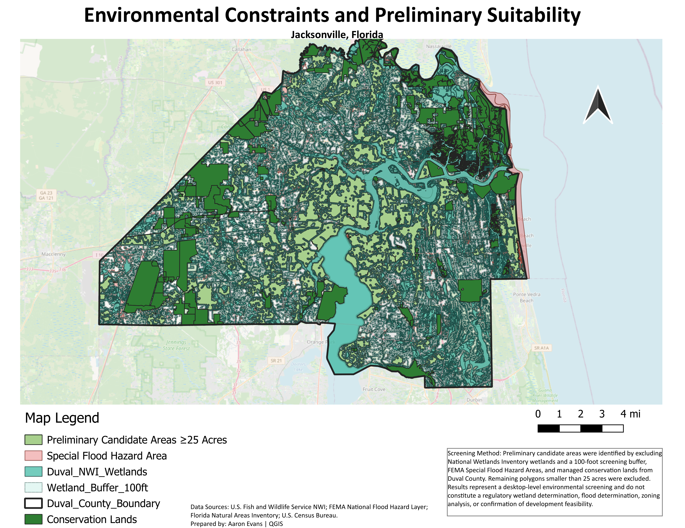

Jacksonville Environmental Suitability Screening
This QGIS analysis identifies areas that may warrant further evaluation for future land-use planning or development. Mapped wetlands and a 100-foot screening buffer, FEMA Special Flood Hazard Areas, and managed conservation lands were excluded. The remaining results show contiguous areas of at least 25 acres with fewer identified environmental constraints. Additional review of zoning, ownership, utilities, soils, protected species, permitting requirements, and existing development would be required before determining whether any site is suitable for development.
Open full-resolution map →